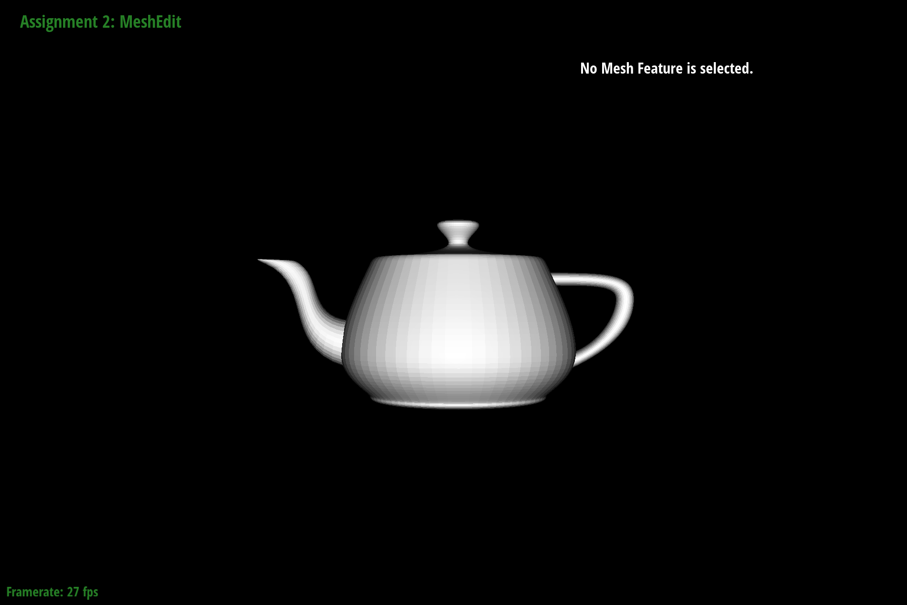

Overview
Section 1 of this homework revolved around implemented de Casteljau's algorithm for Bezier curves and Bezier surfaces. I found these parts pretty straightforward after understanding the algorithms as descrbied in lecture. I fixed most of my unexpected outputs by setting breakpoints and stepping through my code.
In Section 2, I implemented operations on meshes including edge flips and edge splits. I found drawing out all the instances of each mesh component to be very helpful in meticulously assigning properties in the code.
Section I: Bezier Curves and Surfaces
Part 1: Bezier Curves with 1D de Casteljau Subdivision
Briefly explain de Casteljau's algorithm and how you implemented it in order to evaluate Bezier curves.
Given a vector of $n$ control points, de Casteljau's algorithm recursively assigns $n-1$ new "control points" as interpolations of the previous vector until there is only one resulting interpolated value. This final value is a single point on the actual Bézier curve. The interpolation coefficient $t$ ranges from 0 to 1. In $\texttt{evaluate_step()}$, I allocate a vector and append at position $i$ the linearly-interpolated value between positions $i$ and $i+1$ from the input vector.
Take a look at the provided .bzc files and create your own Bezier curve with 6 control points of your choosing. Use this Bezier curve for your screenshots below.
Show screenshots of each step / level of the evaluation from the original control points down to the final evaluated point. Press E to step through. Toggle C to show the completed Bezier curve as well.
Subfigures (left to right, top to bottom) showing the recursive subdivisions for de Casteljau's algorithm. The final subfigure also includes the resulting Bézier curve.
Show a screenshot of a slightly different Bezier curve by moving the original control points around and modifying the parameter \(t\) via mouse scrolling.
Visualized subdivision for a 6-point Bézier curve.
Part 2: Bezier Surfaces with Separable 1D de Casteljau
Briefly explain how de Casteljau algorithm extends to Bezier surfaces and how you implemented it in order to evaluate Bezier surfaces.
For Bézier surfaces, de Casteljau is evaluated over control points that came from 1D evaluations along one dimension of the surface. I implemented it by calling $\texttt{evaluate1D()}$ for each row of the surface separately, then calling a final $\texttt{evaluate1D()}$ over the collection of those outputs. $\texttt{evaluate1D()}$ itself is implemented as an iterative $\texttt{evaluateStep()}$ until only one point (a point on the resulting curve) remains.
Show a screenshot of bez/teapot.bez (not .dae) evaluated by your implementation.

Screenshot of bez/teapot.bez evaluated by my implementation of de Casteljau's algorithm for Bézier surfaces.
Section II: Triangle Meshes and Half-Edge Data Structure
Part 3: Area-Weighted Vertex Normals
Briefly explain how you implemented the area-weighted vertex normals.
I implemented the area-weighted vertex normals by iterating through triangles around a vertex (as shown in the primer), finding the position of the three triangle vertices, and performing the cross product between two vectors intersecting the vertices to get an area-weighted normal. Then, these normals are summed up and normalized to get the final area-weighted vertex normal.
Show screenshots of dae/teapot.dae (not .bez) comparing teapot shading with and without vertex normals. Use Q to toggle default flat shading and Phong shading.
Screenshots of dae/teapot.dae comparing teapot shading with (right) and without (left) vertex normals.
Part 4: Edge Flip
Diagram of my halfedge, edge, vertex, and face assignments before and after an e0 flip.
Following the diagram above, I assigned halfedges $0-9$, vertices $0-3$, edges $1-4$, and faces $0-1$. Then, I re-assigned the next, twin, vertex, edge, and face properties of each halfedge according to the drawing. Finally, I re-assigned the proper halfedges for the vertices, edges, and faces. I ran into infinite looping problems, but solved them by returning e0 instead of re-assigning e0 at the end of the loop.
Left: teapot before edge flips. Right: teapot after edge flips.
Part 5: Edge Split
Diagram of my halfedge, edge, vertex, and face assignments before and after an e0 flip.
Following the diagram above, I assigned halfedges $0-9$, vertices $0-3$, edges $1-4$, and faces $0-1$. Then, I allocated 6 new halfedges, 1 new vertex (with position halfway between v2 and v3), 3 new edges, and 2 new faces. Then, I re-assigned the next, twin, vertex, edge, and face properties of each halfedge according to the drawing. Finally, I re-assigned the proper halfedges for the vertices, edges, and faces. I initially forgot to set the position and had to debug why my new vertex was not showing up, but besides that did not run into debugging issues.
Left: original teapot. Right: teapot after edge splits.
Left: original. Right: teapot after a combination of edge flips and splits.
Part 6: Loop Subdivision for Mesh Upsampling
Briefly explain how you implemented the loop subdivision and describe any interesting implementation / debugging tricks you have used.
I implemented Loop subdivision following the recommended steps:
- Compute new positions for all the vertices in the input mesh, marking them as part of the old mesh along the way.
- Compute the updated vertex positions associated with edges (using the fractional formula).
- Split every edge in the old mesh, storing new/old information along the way.
- Flip edges that connect an old and new vertex.
- Copy new vertex positions into the position property.
I mainly needed to debug the centroid calculation in step 1, but using a visual debugger helped me figure out how to fix my assignments.
From left to right: $\texttt{dae/beetle.dae}$ through the upsampling process.
Below is an example of a mesh visibly changing in geometry due to pre-split edges. Usually, sharp edges are totally smoothed out after enough upsampling, but we can introduce more deformities by splitting and flipping early on.
Left, right: icosahedron before and after Loop upsampling. Center: icosahedron with some pre-split edges after Loop upsampling; the geometry visibly changes.
The figure below shows that the edges of $\texttt{dae/cube.dae}$ can be split so that the upsampled mesh is symmetric. To do this, the single edge is split into 4 edges for all cube faces.
Left: original cube. Center: original cube after splitting edges so that each face has 4 edges. Right: center cube after Loop upsampling.